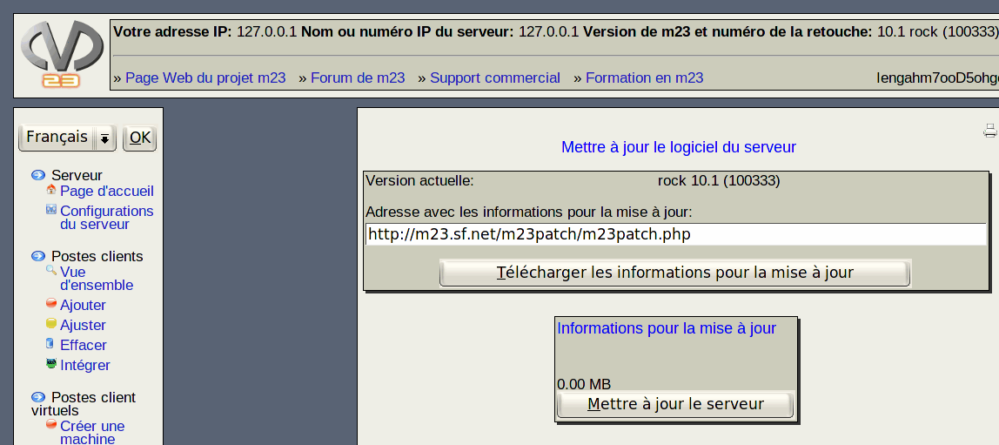

suivant:
Procédez comme suit:
monter:
Serveur
précédent:
Gérer les comptes administrateurs
Table des matières
Mettre à jour les logiciels du serveur
Il est simple de mettre à jour les logiciels de votre serveur m23 en utilisant ce dialogue.

Sous-sections
Procédez comme suit:
root 2016-10-17